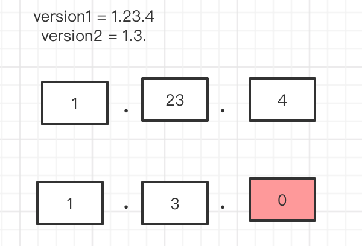
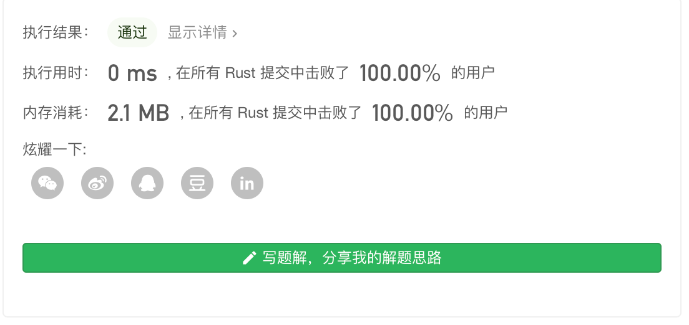

Leetcode 第165题 比较版本号
比较两个版本号 version1 和 version2。 如果 version1 > version2 返回 1，如果 version1 < version2 返回 -1， 除此之外返回 0。
你可以假设版本字符串非空，并且只包含数字和 . 字符。
. 字符不代表小数点，而是用于分隔数字序列。
例如，2.5 不是“两个半”，也不是“差一半到三”，而是第二版中的第五个小版本。
你可以假设版本号的每一级的默认修订版号为 0。例如，版本号 3.4 的第一级（大版本）和第二级（小版本）修订号分别为 3 和 4。其第三级和第四级修订号均为 0。
示例 1:
输入: version1 = "0.1", version2 = "1.1" 输出: -1
示例 2:
输入: version1 = "1.0.1", version2 = "1" 输出: 1
示例 3:
输入: version1 = "7.5.2.4", version2 = "7.5.3" 输出: -1
示例 4：
输入：version1 = "1.01", version2 = "1.001" 输出：0 解释：忽略前导零，“01” 和 “001” 表示相同的数字 “1”。
示例 5：
输入：version1 = "1.0", version2 = "1.0.0" 输出：0 解释：version1 没有第三级修订号，这意味着它的第三级修订号默认为 “0”。
提示：
- 版本字符串由以点 （
.） 分隔的数字字符串组成。这个数字字符串可能有前导零。 - 版本字符串不以点开始或结束，并且其中不会有两个连续的点。
解题思路
这道题目 比较的version 包含 0~9 和 .符号,正常情况下 我们可以思考 将两个字符串 注意比较。
比较字符串 我们可能会遇到 01 0001 这样 要处理起来比较麻烦,所以最好的方法是把它转换成 整形
我们 把 版本号通过 split 分割成多个部分然后 ,去比较每一块内容。
普通方法
我们 这里使用的方法 是把 数组 通过 "." 分割 n 个数组, 然后 我们 把它转换成 整形数组,然后比较下大小
如果 哪一组 大于 另一组 就返回 1 或 -1,如果等于 我们 就移动到对应的下一组去比较.这里我们要注意的是 如果某一组 到了末尾 我们 我们就 用0 来和另一组比较。

use std::str::FromStr; #[macro_export] macro_rules! toi32 { ($name:expr) => { i32::from_str($name).unwrap() }; } pub fn compare_version(version1: String, version2: String) -> i32 { let mut version1 = version1; let mut version2 = version2; let mut tag = 0; //version1 为长的数组 , if version2.len() > version1.len(){ let tmp = version2; version2 = version1; version1 = tmp; tag =1; } let mut v1:Vec<&str> = version1.split(".").collect(); let mut v2:Vec<&str> = version2.split(".").collect(); let v1len = v1.len(); let v2len = v2.len(); for i in 0..v1len { if i < v2len && toi32!(v1[i]) > toi32!(v2[i]) { println!("{} {}", toi32!(v1[i]), toi32!(v2[i])); if tag == 0 { return 1; } return -1; }else if i >= v2len && toi32!(v1[i]) > 0{ if tag == 0 { return 1;} return -1; }else if i < v2len && toi32!(v1[i]) < toi32!(v2[i]){ if tag == 0 { return -1; } return 1; } } return 0; } fn main() { let v1 = String::from("1.0.1"); let v2 = String::from("1"); println!("{}", compare_version(v1,v2)); }
双指针
to be continues!